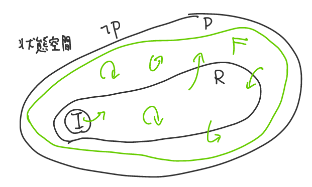

- 状態 $x=(L_1, L_2, y_1, y_2)$ - $L_1$: P1の行番号 - $L_2$: P2の行番号 - $x'=(L_1', L_2', y_1', y_2')$ - Transition System $S = (I(x), T(x, x'))$ - I: 初期状態を定める述語 - $I(x) = (L_1=0 \land L_2=0 \land y_1=0 \land y_2=0 )$ - T: 遷移関係を定める述語 - $ T(x, x') = (L_1=0 \land L_1' = 1 \land y_1'=y_2+1\land y_2'=y_2 \land L_2' = L_2) \lor \\ .... $
 - Transition System $S = (I(x), T(x, x'))$ - これについて, ある述語 $P(x)$ (Safety Property) を常に満たしているか検証する (Safety Verification) - この場合は$P(x) = \lnot (L_1 = 2 \land L_2 = 2)$
- 述語 F(x) を使って、状態集合 F と言ったときは Fを満たす状態の集合 $\left\lbrace x \mid F(x) \right\rbrace$ - 状態集合 $I$ 初期状態の集合 - 到達可能な状態の述語: $R$ - $i$回以下の遷移で到達可能な状態の集合 $R_i$ - $R_0 = I$ - $R_1(x) = R_0(x) \lor \exists x_0\in R_0. T(x_0, x)$ - $R = R_0 \lor R_1 \lor R_2 \lor ...$ - Safety Verification - $R(x) \implies P(x)$ を示す
## Bounded Model Checking - 有限のkを決めて、$R_k$ について、 - $R_k \land \lnot P$ が unsatisfiable かどうかチェックする。 (unrolling) - $I(x_0) \land \bigwedge_{i=0}^{k-1}T(x_{i}, x_{i+1}) \land \lnot P(x_k)$ をチェック - completeness - SATの場合、いずれ停止し、すぐにPの反例が得られる - UNSATの場合は停止しない
## IC3 - ある述語$F$がinductive(帰納的)とは - $I(x) \implies F(x)$ - $F(x) \land Tr(x, x') \implies F(x')$ - 到達可能な状態Rを、素直に扱うのは難しいので、変わりに、それをカバーするような帰納的述語 F を見つける - $F$は帰納的 - $R(x) \implies F(x)$ - $F(x) \implies P(x)$ 
### アルゴリズム概観 - $R_1, R_2, … ,R_n$をover-approximateするような $F_1, F_2, …, F_n$ を管理しながら進む - 列$F$は、次の性質を保つようにする - $F_0 = I$ - $F_i \implies F_{i+1}$ (0 < i < k) - $F_i \implies P$ - $F_i \land T \implies F_{i+1}'$ - 外側のループ: $n := n+1$ として、ステップを増やす - 内側のループ: $F_1, F_2…F_n$を洗練する - どこかのタイミングで、$F_{n-1} = F_n$ と収束したら、これがinductiveで、終了 - $F_0\implies F_1\implies ... \implies F_n$ - $F_{n-1}\land T\implies F_n' (=F_{n-1}')$ - もしくは、途中で反例が見つかる
### 外側のループ - $F_n \land Tr \implies P'$ の場合 - $F_{n+1} = P$ として、$n:=n+1$ にしたらFの条件4つを満たしている - $F_n \land Tr \nRightarrow P'$ の場合 - 反例となる状態 $s \in F_n$ が存在するはず。$s$は$\lnot P$ まで1ステップである。この$s$を$F_n$から弾かないといけない。 <div> </div>
#### $F_n \land Tr \nRightarrow P'$ の場合 - 反例となる状態 $s \in F_n$ が存在するはず。$s$は$\lnot P$ まで1ステップである。この$s$を$F_n$から弾かないといけない。 - ここで、Pがinvariantなら$\lnot s$ は少なくとも $F_0$に対しては帰納的 - $G$が$F$に対して帰納的: $G\land F\land T\implies G'$ かつ $I \implies G$ - もし、そうでない（$\lnot s \land F_0 \land T\nRightarrow \lnot s'$ または $I \nRightarrow \lnot s$ ）なら - 初期状態→$s$→$\lnot P$ が反例 - $s$ → $\lnot P$が反例 - $i \ge 0$ について、 $\lnot s$ が $F_i$ に対して帰納的になるような最大の$i$をとってくる - $\lnot s$ を**inductive generalize**した $c$ を $F_0, F_1…F_{i + 1}$ のそれぞれに論理積取って更新する。 - $c$は$\lnot s$よりも強くて( $c\implies \lnot s$ )、$F_i$に対して帰納的 - ここでは, $s$よりも広い部分をブロックしていて、単に$s$をブロックするより効率的
#### $F_n \land Tr \nRightarrow P'$ の場合 > - $s$は$\lnot P$ まで1ステップである。この$s$を$F_n$から弾かないといけない > - $c$ を $F_0, F_1…F_{i + 1}$ のそれぞれに論理積取って更新 > - $c$は$\lnot s$よりも強くて( $c\implies \lnot s$ )、$F_i$に対して帰納的 > - $F_i \implies F_{i+1}$ (0 < i < k) > - $F_i \implies P$ > - $F_i \land T \implies F_{i+1}'$ - $0 \le j \le i$ について、列の条件を維持できているのか？ - $F_j\implies F_{j+1}$なので$F_j\land \lnot s\implies F_{j+1}\land \lnot s$ - $F_j \implies P$ なので $F_j \land \lnot s \implies P'$ - $F_j\land T\implies F_{j+1}'$ と条件から $F_j\land \lnot s\land T\implies F_{j+1}'\land \lnot s'$ - 使える条件 $F_i\land \lnot s \land T\implies \lnot s'$ - $j = i + 1$ だと、これが成り立たない - また, $F_{i+1}$に関してはかならず状態が削られる（？不明）
> - $s$は$\lnot P$ まで1ステップである。この$s$を$F_n$から弾かないといけない > - $i \ge 0$ について、 $\lnot s$ が $F_i$ に対して帰納的になるような最大の$i$をとってくる > - $c$ を $F_0, F_1…F_{i + 1}$ のそれぞれに論理積取って更新 > - $c$は$\lnot s$よりも強くて( $c\implies \lnot s$ )、$F_i$に対して帰納的 - もし$i \ge n-1$ の場合、 $F_n$ が更新され、$s$ が$F_n$から排除された - 次に $F_n \land T \implies P'$ をチェックすると、成り立つか、$s$ではない反例が帰ってくる - $i \lt n-1$ の場合、どうなる？ - $F_{i+1}\land \lnot s \land T\nRightarrow \lnot s'$ なので、$F_{i+1}\setminus F_i$ にはsの一歩手前の状態 t がいる。 - $i = 0$ の場合 - $F_0$ から実際にそのtに行けるならアウト - $i > 0$ の場合 - $\lnot t$ は、少なくとも $F_{i-1}$ に対しては帰納的 - そうでないなら $\lnot t \land F_{i-1}\land T \nRightarrow \lnot t'$ で、 $u\in F_{i-1}$ が存在して 次のステップでtにいける。つまり、$F_i$ から1ステップで$s$に行けてしまうので矛盾。 - 次の目標は $t$ を $F_{i+1}$ から排除することになり、再帰的にやっていく。 - $P$がinvariantなら、最終的には $F_{i+1}\land \lnot s \land T\implies \lnot s'$ を得られる。
- $i > 0$ の場合 - $\lnot t$ は、少なくとも $F_{i-1}$ に対しては帰納的 - そうでないなら $\lnot t \land F_{i-1}\land T \nRightarrow \lnot t'$ で、 $u\in F_{i-1}$ が存在して 次のステップでtにいける。つまり、$F_i$ から1ステップで$s$に行けてしまうので矛盾。 - 次の目標は $t$ を $F_{i+1}$ から排除することになり、再帰的にやっていく。 - $P$がinvariantなら、最終的には $F_{i+1}\land \lnot s \land T\implies \lnot s'$ を得られる。
ダメな例
ダメな例
ダメな例
ダメな例
sを排除できた例
sを排除できた例
sを排除できた例
sを排除できた例
sを排除できた例
- CHCと呼ばれる節からなる充足可能性問題への帰着が、最近のプログラム検証だとアツい？ - CHCソルバとして、PDRの変種が使われている - GPDR [K. Hoder, 2012] - Spacer[Komuravelli, 2013]